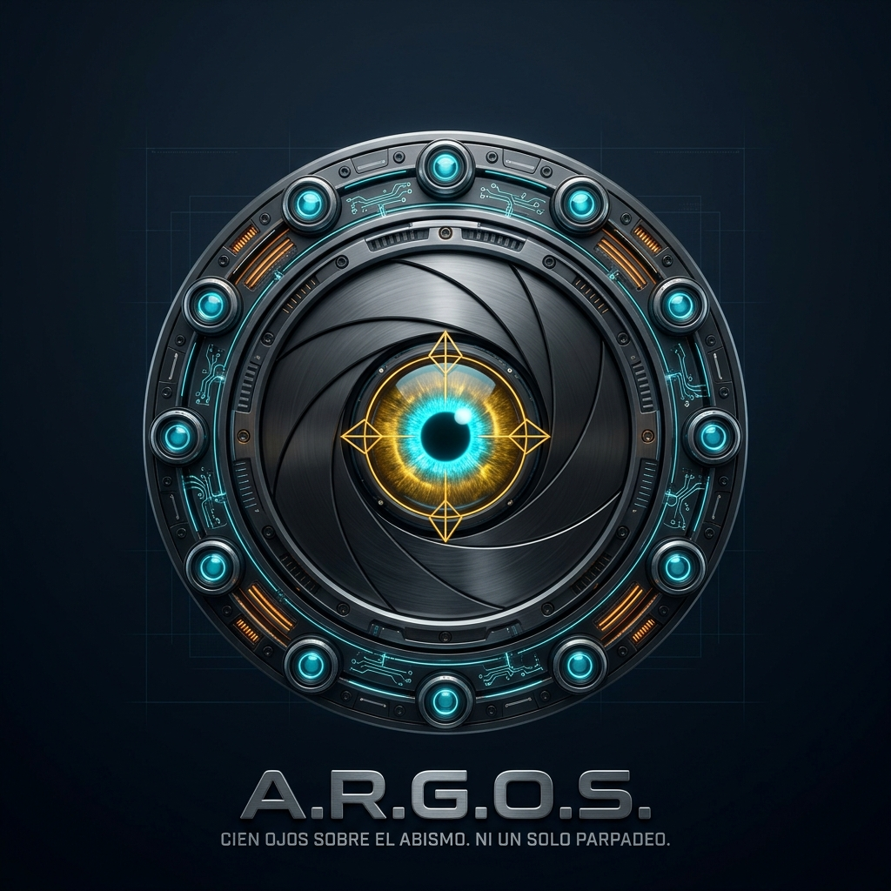

SYS-04 // ARCHITECTURAL OVERSIGHT & STATIC INTELLIGENCE // STDLIB-PURE
ARCHITECTURE REPOSITORY GLOBAL OVERSIGHT SYSTEM // TITANIUM v5.0
Un motor de cartografía arquitectónica, cálculo formal de complejidad cognitiva y telemetría de grafos de ultra-alta velocidad en memoria RAM. Escanea repositorios masivos en caliente sin instalar un solo paquete externo.
«Cien ojos sobre el abismo. Ni un solo parpadeo.»
«Cien miradas vigilan lo que una sola mano forja.» • «Ni un byte en la sombra. Ni una fractura impune.»
SUBSISTEMA: A.R.G.O.S. // OBSERVADOR ARQUITECTÓNICO · REV v5.0 TITANIUM
01 // LA TESIS DEL OBSERVADOR OMNIPRESENTE
En el desarrollo contemporáneo, la respuesta estándar ante cualquier problema arquitectónico es instalar un paquete de 200 MB con docenas de dependencias transitivas. Cuando auditas bases de código críticas, no puedes permitir que tus herramientas de inspección tengan más superficie de ataque y fragilidad que el código que auditan.
A.R.G.O.S. opera exclusivamente sobre el árbol sintáctico abstracto (`ast`), expresiones regulares pre-compiladas y algoritmos de teoría de grafos implementados sobre la biblioteca estándar de Python. Sin `networkx`, sin `radon`, sin `pyyaml`. Cero cadenas de suministro ajenas.
Un analizador que tarda 15 minutos en correr es ignorado por los ingenieros. Los 1,814 tests de A.R.G.O.S. ejecutan en apenas 3.52 segundos. Su auditoría completa sobre repositorios de más de 1,000 archivos concluye en menos de 30 segundos en memoria RAM, permitiendo verificación instantánea en pipelines locales y CI.
Los proyectos modernos de alto rendimiento ya no son monolitos en un solo lenguaje. A.R.G.O.S. audita la topología híbrida de Python vinculada con módulos nativos de Rust mediante PyO3, rastreando llamadas nativas y puntos de entrada sin GIL.
02 // ESTRUCTURA MATEMÁTICA Y TOPOLÓGICA
Organizado bajo una jerarquía modular con Boundary Guards infranqueables: ninguna capa superior puede violar las leyes ni importar de forma circular a una capa inferior.
Define los contratos inmutables, tipos de datos canónicos y restricciones de runtime del sistema mediante dataclasses con slots=True. Ningún extractor puede inventar estructuras ad-hoc: toda información descubierta sobre funciones, clases, rutas y métricas se tipa en esta capa con verificación estricta en Pyright.
InfoDefinicion, InfoRuta, InfoClase y InfoFileMetrics.to_skeleton(nivel="contract") para exportar contratos semánticos sin lecturas de disco adicionales.03 // INTELIGENCIA ESTÁTICA PROFUNDA
A.R.G.O.S. reemplaza las heurísticas superficiales con implementaciones matemáticas rigurosas construidas directamente sobre el AST.
Implementa formalmente las reglas B1 (rupturas de flujo) y B2 (penalización acumulativa por anidamiento) del estándar de G. Ann Campbell. Trata los elif con incremento plano sin duplicar penalizaciones, excluye context managers with que no bifurcan flujo, detecta recursión directa y calcula el Índice de Mantenibilidad (MI) basado en Halstead.
Construye un grafo dirigido acíclico de routers (FastAPI, Flask, Django, Starlette, Litestar) y los resuelve en orden topológico estricto para unir prefijos anidados multi-nivel. Detecta vulnerabilidades BOLA/IDOR analizando parámetros dinámicos, extrae dependencias de seguridad RBAC y exporta esquemas OpenAPI 3.1 parciales sin instanciar la aplicación.
Supera los regex ciegos: rastrea os.environ[...], os.getenv, y clases derivadas de pydantic-settings (detectando Field(validation_alias=...), AliasChoices y defaults literales). Audita manifiestos pyproject.toml y requirements.txt alertando sobre dependencias no pineadas y directivas inseguras de contenedores (USER root, :latest).
Convierte identificadores de pruebas en especificaciones de negocio legibles mediante decodificación BDD y camelCase. Audita la calidad de las suites detectando Ghost Tests (pruebas vacías o sin aserciones que generan falsa cobertura), distinguiéndolos de omisiones intencionales (@pytest.mark.skip, xfail), y alertando sobre anti-patrones como SETUP_EXCESIVO o DEMASIADOS_MOCKS.
04 // VERIFICACIÓN EN CALIENTE
El motor se somete de forma continua a pruebas de paridad sobre el repositorio completo de Archangel (más de 430,000 líneas políglotas en Python y Rust).
05 // BENCHMARK ARQUITECTÓNICO
¿Cómo se compara un motor en stdlib puro frente a las suites corporativas y linters tradicionales?
| Capacidad / Métrica | A.R.G.O.S. v5.0 | SonarQube | Radon / Flake8 | Semgrep CLI |
|---|---|---|---|---|
| Dependencias Externas | 0 KB (Stdlib pura) | JVM + Base de datos | Librerías pip de terceros | Binario OCaml / Python |
| Tiempo de Suite (1,800+ tests) | 3.52 segundos | Varios minutos | Variable (segundos) | Variable |
| Complejidad Cognitiva Campbell | Nativa AST (B1/B2) | Nativa | No (Solo Ciclomática plana) | Reglas externas |
| Topología de Routers & DAG | Orden topológico multi-framework | No resuelve prefijos AST | No soportado | Reglas de taint |
| Inspección Híbrida Rust-PyO3 | Nativa FFI | Por separado | No soportado | Por separado |
| Sobrecarga en Memoria | Ultra-baja (slots=True) | Alta (> 2 GB RAM) | Moderada | Moderada |
06 // INGENIERÍA DE ALTO RENDIMIENTO
Desarrollado bajo una metodología de pair-programming de frontera: diseño estricto de interfaces, compilador con cero advertencias de tipo y batería de tests inmediata.
Líneas de Producción Pura
49 micro-módulos en 9 capas, contratos cerrados, tipado al 100% verificado en Pyright.
Líneas de Tests Unitarios
45 suites blindando 1,814 pruebas exhaustivas sin dependencias mockeadas.
Tests Verificados (3.52s)
100% verde en tiempo récord manteniendo paridad absoluta sobre 1,063 archivos en vivo.
PARTE INTEGRAL DEL ECOSISTEMA SINTAXIS G